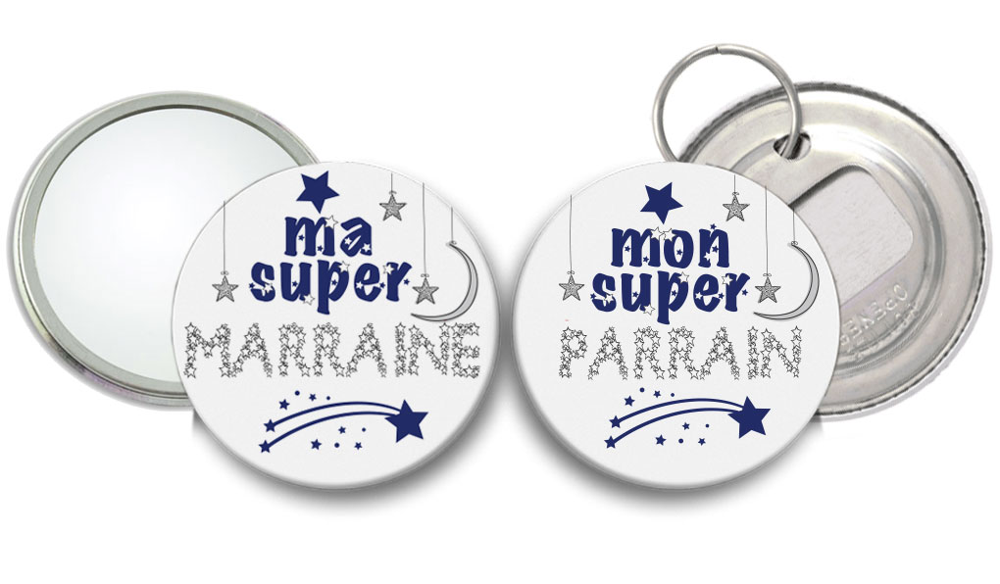

Bienvenue sur la page Cours ! Ici vous trouverez plusieurs
informations sur vos cours et examens à EFREI PARIS N'hésitez pas a scroller ;)
Les cours
1e étape : Les amphithéâtres
Les amphithéâtres constituent la partie théorique du cours, c'est un cours magistral donné par un professeur devant une demi-promotion de 100 étudiants.
2e étape :
Vous faisiez un sport avant d'entrer à l'EFREI ? Vous pouvez
certainement le continuer cette année ! L'EFREI propose un large
choix de sports. Vous êtes interessés par la photographie,
l'humanitaire, la robotique ou autre ? N'hésitez pas à vous inscrire !
Vous serez avec tout un groupe intéressé par les mêmes activitées
!
3e étape : Intéressez vous aux activités proposées par l'asso
Intéressez vous à ce que l'asso peut vous proposer ! Il y a beaucoup
d'évènements que proposent les assos pour se faire connaitre. N'hésitez
pas à vous y intéresser et demandez vous si cette association pourrait
vous correspondre. Est ce que vous serez vraiment motivés ? C'est
sûrement évident mais pas aussi facile que ça ! Vous comprendrez
donc le lien avec l'importance d'avoir une source de motivation
derrière. Quel est le but de s'inscrire dans une association si
ce n'est pas pour y aller ?
4e étape : Parlez en avec vos amis
Pourquoi ne pas s'inscrire dans une association avec un ami ? C'est
une source de motivation assez importante ! Ainsi vous pourrez vous
amuser, partager des moments avec eux et tous les autres membres de
l'asso.
Attention à ne pas se priver parce que aucun de vos
amis ne sont intéressés par l'asso. Vous ferez forcément connaissance
avec les autres membres et vous pourrez vous faire de nouveaux amis
!
Etape bonus : Entre dans l'asso de ton parrain ou de ta marraine

N'oubliez pas l'importance des points PAVE ! Plus vous aurez
d'associations dans lequel vous participerez, plus vous aurez de
points.
Les contacts sont une bonne façon de s'informer sur les différentes
associations... Et qui de mieux qu'un ancien pour vous guider ?
Pensez à vos parrains ou à vos marraines ! Avec un peu de chance
ils pourront peut-être vous faire monter au sein de l'asso. Ne
négligez pas cette alternative... Encore faut-il que vous ayez de
bonnes relations avec eux !
Les examens
1e étape : Les contrôles écrits
Les CE sont les premiers examens que nous passons dans un semestre. Nous avons un CE par matière d'une durée de
45 minutes. Il s'agit d'un test sur nos connaissances et plus rarement sur la pratique.
Il peut être sous la forme de QCM ou de simple questions à réponses libres.
2e étape : Les tests de TD
Ces tests sont au choix de votre enseignant de TD, il peut prendre n'importe quelle forme :qcm, reponses libres, oral.
La participation pendant les TD joue aussi sur la note finale de TD.
3e étape : Les TAI/Projets
Les TAI sont des oraux qui ont lieux uniquement dans certaines matières, plus souvent en physique.
Les TAI se travaillent en équipe et en autonomie, il n'y a pas de séances dédiés a leur execution.
C'est l'occasion de comprendre des notions vue en cours a l'aide' d'exemples concrets donc les sujets ont été choisis ou validé par le professeur.
4e étape : Les devoirs écrits
Les DE sont la finalisation de la matière pour le semestre, c'est donc l'examen le plus important du semestre, c'est donc celui avec le plus gros coefficient.
Nous avons encore une fois un DE par matière d'une durée de 1h45. Il s'agit d'un test tourné davantages vers la pratique avec peu de questions sur les connaissances. Pour cet examens. il est important de comprendre et de savoir refaire chaque tds vu pendant le semestre.
Le petit plus
Efreidoc
Un site qui a servi au moins une fois a tous les étudiants : efreidoc
C'est un site qui référence des archives d'étudiants de promos antérieures. Vous y retrouverez des sujets d'examens ainsi que leur corrections.
Aussi, si vous n'avez pas pu assister à un cours, vous pourrez certainement y voir votre leçon manquée.